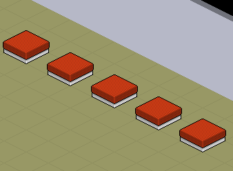
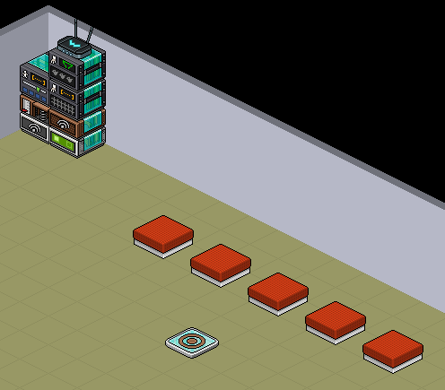

Community
Fragen aus der Community
Wie würde man selektieren, auf welchen Möbeln keine User sitzen, damit die User nur zu den Möbeln teleportiert werden, wo niemand sitzt?
Frage von: Das.DJ
Frage von: Das.DJ
Um Möbel zu selektieren, die KEINE User auf sich haben, muss zunächst geklärt werden wie es überhaupt möglich ist Möbel mit User zu selektieren, da es sich bei der Fragestellung um eine Negativvariante handelt. Um Negativ-Aufgaben lösen zu können empfiehlt es sich allgemein immer zuerst die Positivvarianten zu lösen und diese dann negativ zu setzen.
In unserem Beispiel nutzen wir 5 gleichartige Hocker:
In unserem Beispiel nutzen wir 5 gleichartige Hocker:

5 Hocker vom gleichen Möbeltyp
Tritt ein User auf eine Ringplatte, soll dieser zu einem freien Hocker teleportiert werden. Wir können also mit dem Tritt-auf Auslöser starten. Der Startstapel muss wissen, um welche User es geht. Nämlich um die User, die sich auf die Hocker befinden. Diese können mit "User auf Möbel" selektiert werden.
So weit, so gut. Aber jetzt haben wir nur die User selektiert mit den Hockern, aber nicht die Hocker mit den Usern. Das liegt daran, dass dies nicht auf direktem Weg einstellbar ist und wir das "herumdrehen" müssen. Damit ist gemeint, dass die Userselektierung übersetzt werden muss auf Möbelselektierung. Kurze Erklärung hierzu:
Wir haben die 5 Hocker im "User auf Möbel" Selektor ausgewählt. Der Selektor gibt die User als Information wieder aber im weiteren Verlauf werden die Informationen über die markierten Hocker verloren. Jedoch möchten wir genau auf diese Hocker zugreifen. Die Übersetzung besteht also darin, dass die ausgewählten Möbel, die verantwortlich für die Userselektierung sind, "zurückgeholt" werden.
Als "Übersetzer" eignet sich Möbelnähe-Selektor wunderbar. Darin können nämlich Möbel ausgewählt werden, die sich in der Nähe von definierten Usern befinden (Dies wird unser 2. Stapel).
Die User haben wir bereits definiert, es sind die, die sich auf den Hocker befinden. Und mit diesem Selektor wählen wir die Möbel aus, worauf sich die User befinden, indem wir die blauen Böden im Editor löschen bis auf die, die sich innerhalb des ▢ (Bezugspunkts) befindet:

Damit haben wir nämlich erreicht, dass alle Möbel ausgewählt werden, die auf denselben Boden sind wie der User. Wir möchten aber, dass nur Hocker desselben Möbeltyps selektiert werden und z. B. kein Teppich der sich darunter befinden könnte oder was auch immer. Deshalb kommt zusätzlich Möbeltyp-Selektor zum Einsatz, der wie folgt eingestellt wird:
So wird dann alles rausgefiltert bis auf alle Hocker vom selben Typ wie das Markierte. In diesem 2. Stapel kann nun endlich das Teleport-Wired eingebaut werden. Einstellung folgt:
In den Erweiterungen können wir die Möbelquelle auf "vom Selektor nehmen" festlegen. Userquelle bleibt auf Standard. Es ist einfach der User, der auf die Ringplatte tritt. Jetzt müssen wir nur noch verstehen wie wir diese beiden Stapeln "verbinden". Das funktioniert mit Signal-Wireds.
Der erste Stapel ist der Verursacher und leitet 2 wichtige Informationen an Stapel 2 weiter. Zum einen den auslösenden User, was automatisch passiert. Zum anderen die User auf den Hocker. Stapel 2 nimmt die Informationen auf. Teleport-Wired nimmt den auslösenden User automatisch an. In Möbelnähe-Selektor wird die 2. Information verarbeitet. Wir sind damit allerdings noch nicht ganz fertig. Die Frage ist ja, wie wir das nun negativ setzen. Das funktioniert ganz einfach:
Durch "Umkehren" wird der Selektor negativ und wählt nun alle Möbel raus, worauf sich User befinden. Und was bleibt übrig? Richtig, die Möbel (Hocker), worauf sich kein User befindet. Am Ende kann sich das Ergebnis dieser schwierigen Umsetzung mit wenigen Wireds wirklich sehen lassen:

Man wird auf zufällige freie Hocker teleportiert